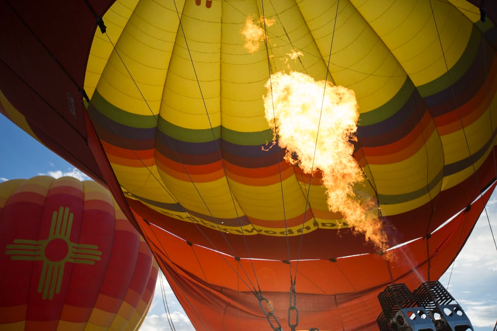
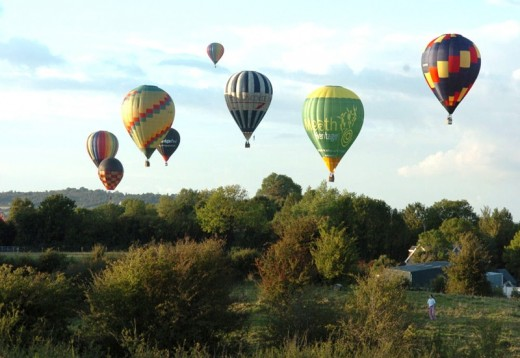
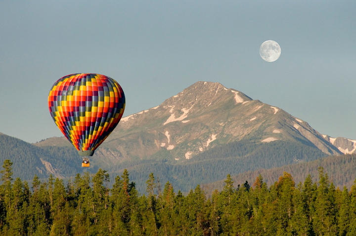
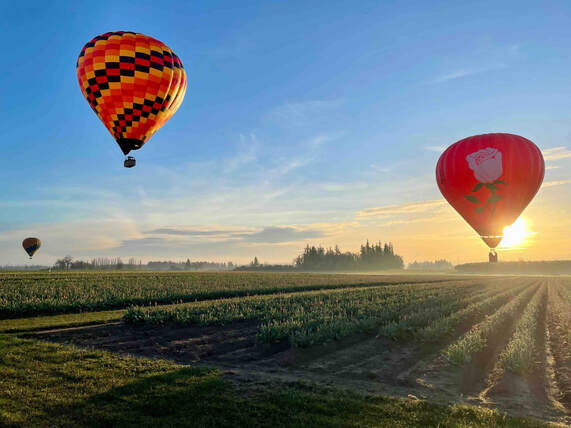

Soar above Ireland and experience it from a whole new perspective. At Summit Air, we offer breathtaking hot air balloon rides over Ireland’s most stunning landscapes – from rolling green hills and ancient castles to sparkling lakes and dramatic coastlines.
 |
 |
 |
 |
History of Summit Air
Summit Air was founded in 2012 by Irish pilot and outdoor enthusiast Declan Byrne,
whose lifelong passion for aviation and the Irish countryside inspired him to create
a new way for people to experience the landscape. After training as a commercial balloon
pilot in the UK and spending several seasons flying across Europe, Byrne returned home with
the idea of offering scenic balloon flights over Ireland’s rolling hills, farmland, and historic landmarks.
Starting with a single hot air balloon and a small ground crew, Summit Air launched its first flights in
the Midlands, where calm morning winds and sweeping views made for ideal ballooning conditions. Word quickly
spread as visitors and locals alike discovered the peaceful thrill of drifting above patchwork fields, ancient
ruins, and misty valleys at sunrise.
Over the years, Summit Air gradually expanded its fleet and flight locations, while remaining committed to safety,
professionalism, and the relaxed hospitality that has always defined the company. Today, Summit Air welcomes guests
from across Ireland and around the world, offering unforgettable balloon journeys that showcase the island’s natural
beauty from a unique perspective high above the landscape.